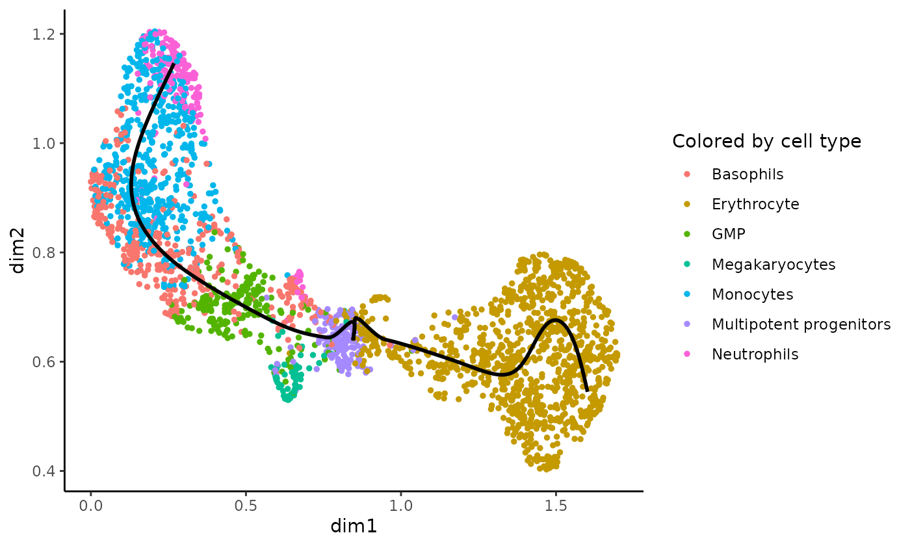

vignettes/fitGAM.Rmd
fitGAM.RmdtradeSeq is an R package that allows analysis of gene expression along trajectories. While it has been developed and applied to single-cell RNA-sequencing (scRNA-seq) data, its applicability extends beyond that, and also allows the analysis of, e.g., single-cell ATAC-seq data along trajectories or bulk RNA-seq time series datasets. For every gene in the dataset, tradeSeq fits a generalized additive model (GAM) by building on the mgcv R package. It then allows statistical inference on the GAM by assessing contrasts of the parameters of the fitted GAM model, aiding in interpreting complex datasets. All details about the tradeSeq model and statistical tests are described in our preprint [@VandenBerge2019a].
In this vignette, we analyze a subset of the data from [@Paul2015]. A SingleCellExperiment object of the data has been provided with the tradeSeq package and can be retrieved as shown below. The data and UMAP reduced dimensions were derived from following the Monocle 3 vignette.
To install the package, simply run
if(!requireNamespace("BiocManager", quietly = TRUE)) { install.packages("BiocManager") } BiocManager::install("tradeSeq")
Alternatively, the development version can be installed from GitHub at https://github.com/statOmics/tradeSeq.
library(tradeSeq) library(RColorBrewer) library(SingleCellExperiment) library(slingshot) # For reproducibility RNGversion("3.5.0") palette(brewer.pal(8, "Dark2")) data(countMatrix, package = "tradeSeq") counts <- as.matrix(countMatrix) rm(countMatrix) data(crv, package = "tradeSeq") data(celltype, package = "tradeSeq")
We find two lineages for this dataset. The trajectory can be visualized using the plotGeneCount function, using either the cluster labels or cell type to color the cells.
plotGeneCount(curve = crv, clusters = celltype, title = "Colored by cell type")

We use a negative binomial generalized additive model (NB-GAM) framework in tradeSeq to smooth each gene’s expression in each lineage. Smoothers can be decomposed into a set of basis functions, which are joined together at knot points, often simply called knots.
Ideally, the number of knots should be selected to reach an optimal bias-variance trade-off for the smoother, where one explains as much variability in the expression data as possible with only a few regression coefficients. In order to guide that choice, we developed diagnostic plots using the Akaike Informaction Criterion (AIC). This is implemented in the evaluateK function in tradeSeq. The function takes as input the expression count matrix, and the trajectory information, which can be either a SlingshotDataSet, or a matrix of pseudotimes and cell-level weights from any trajectory inference object. The range of knots to evaluate is provided with the knots argument. The minimum allowed number of knots is \(3\). While there is no boundary on the maximum number of knots, typically the interesting range is around \(3\) to \(10\) knots. The evaluateK function will fit NB-GAM models for some random subset of genes, provided by the nGenes argument, over the range of knots that are provided, and return the AIC for each gene fitted with each number of knots. It is generally a good idea to evaluate this multiple times using different seeds (using the set.seed function), to check whether the results are reproducible across different gene subsets.
By default, evaluateK outputs diagnostic plots that should help in deciding on an appropriate number of knots. If you want to use the different diagnostic plots to choose the number of knots when fitting the smoothers, you can disable to plotting option and store the AIC values in an object.
Below, we use the Slingshot object to run the function.
### Based on Slingshot object set.seed(6) icMat <- evaluateK(counts = counts, sds = crv, k = 3:7, nGenes = 100, verbose = FALSE, plot = TRUE) print(icMat[1:2, ]) ### Downstream of any trajectory inference method using pseudotime and cell weights set.seed(7) pseudotime <- slingPseudotime(crv, na=FALSE) cellWeights <- slingCurveWeights(crv) icMat2 <- evaluateK(counts = counts, pseudotime = pseudotime, cellWeights = cellWeights, k=3:7, nGenes = 100, verbose = FALSE, plot = TRUE)
The output graphics are organized into four panels. The left panel plots a boxplot for each number of knots we wanted to evaluate. The plotted values are the deviation from a gene’s AIC at that specific knot value from the average AIC of that gene across all the knots under evaluation. Typically, AIC values are somewhat higher for low number of knots, and we expect them to decrease as the number of knots gets higher. The two middle panels plot the average drop in AIC across all genes. The middle left panel simply plots the average AIC, while the middle right panel plots the change in AIC relative to the average AIC at the lowest knot number (here, this is 3 knots, as can also be seen from the plot since the relative AIC equals \(1\)). Finally, the right panel only plots a subset of genes where the AIC value changes significantly across the evaluated number of knots. Here, a significant change is defined as a change in absolute value of at least \(2\), but this can be tuned using the aicDiff argument to evaluateK. For the subset of genes, a barplot is displayed that shows the number of genes that have their lowest AIC at a specific knot value.
The middle panels show that the drop in AIC levels off if the number of knots is increased beyond \(6\), and we will choose that number of knots to fit the tradeSeq models.
After deciding on an appropriate number of knots, we can fit the NB-GAM for each gene. Internally, tradeSeq builds on the mgcv package by fitting additive models using the gam function. The core fitting function, fitGAM, will use cubic splines as basis functions, and it tries to ensure that every lineage will end at a knot point of a smoother. By default, we allow for \(6\) knots for every lineage, but this can be changed with the nknots argument. More knots will allow more flexibility, but also increase the risk of overfitting.
By default, the GAM model estimates one smoother for every lineage using the negative binomial distribution. If you want to allow for other fixed effects (e.g., batch effects), then an additional model matrix, typically created using the model.matrix function, can be provided with the U argument. The precise model definition of the statistical model is described in our preprint [@VandenBerge2019a]. We use the effective library size, estimated with TMM [@Robinson2010], as offset in the model. We allow for alternatives by allowing a user-defined offset with the offset argument.
Similar to evaluateK, fitGAM can either take a SlingshotDataSet object as input (sds argument), or a matrix of pseudotimes and cell-level weights (pseudotime and cellWeights argument). By default, the returned object will be a SingleCellExperiment object that contains all essential output from the model fitting. Note, that also a more extensive output may be requested by setting sce=FALSE, but this is much less memory efficient, see below in Section `tradeSeq list output’.
Because cells are assigned to a lineage based on their weights, the result of fitGAM is stochastic. While this should have limited impact on the overall results in practice, users are therefore encouraged to use the set.seed function before running fitGAM to ensure reproducibility of their analyses.
Below, we show two ways in which you can provide the required input to fitGAM: downstream of any trajectory inference method and downstream of slingshot. To follow progress with a progress bar, set verbose=TRUE.
### Based on Slingshot object set.seed(6) sce <- fitGAM(counts = counts, sds = crv, nknots = 6, verbose = FALSE)
## Warning in any(counts): coercing argument of type 'double' to logical### Downstream of any trajectory inference method using pseudotime and cell weights set.seed(7) pseudotime <- slingPseudotime(crv, na = FALSE) cellWeights <- slingCurveWeights(crv) sce <- fitGAM(counts = counts, pseudotime = pseudotime, cellWeights = cellWeights, nknots = 6, verbose = FALSE)
## Warning in any(counts): coercing argument of type 'double' to logicalIf large datasets are being analyzed, fitGAM may be running for quite some time. We have implemented support for parallelization using BiocParallel, which can be activated by setting parallel=TRUE. Parallelization options can be provided through the BPPARAM argument, as shown below.
BPPARAM <- BiocParallel::bpparam() BPPARAM # lists current options
## class: MulticoreParam
## bpisup: FALSE; bpnworkers: 2; bptasks: 0; bpjobname: BPJOB
## bplog: FALSE; bpthreshold: INFO; bpstopOnError: TRUE
## bpRNGseed: ; bptimeout: 2592000; bpprogressbar: FALSE
## bpexportglobals: TRUE
## bplogdir: NA
## bpresultdir: NA
## cluster type: FORKBPPARAM$workers <- 2 # use 2 cores sce <- fitGAM(counts = counts, pseudotime = pseudotime, cellWeights = cellWeights, nknots = 6, verbose = FALSE, parallel=TRUE, BPPARAM = BPPARAM)
## Warning in any(counts): coercing argument of type 'double' to logicalIt may be of interest to only fit the NB-GAM for a subset of genes, but use the information across all genes to perform the normalization. This can be achieved using the genes argument in fitGAM, which accepts a numeric vector specifying the rows of the count matrix for which the models should be fitted.
sce25 <- fitGAM(counts = counts, pseudotime = pseudotime, cellWeights = cellWeights, nknots = 6, verbose = FALSE, genes = 1:25)
## Warning in any(counts): coercing argument of type 'double' to logicalThis dataset consists of UMI counts, and we do not expect zero inflation to be a big problem. However, we also allow to fit zero inflated negative binomial (ZINB) GAMs by providing observation-level weights to fitGAM using the weights argument. The weights must correspond to the posterior probability that a count belongs to the count component of the ZINB distribution [@VandenBerge2018]. In principle, these weights can be calculated using any method of choice. The ZINB-WavE vignette shows how to calculate these using the zinbwave package.
If you’re working with a dataset that has a limited number of cells, or if you are incorporating zero inflation weights, the NB-GAMs may be harder to fit, as noted by the warnings when running fitGAM. In that case, the situation might improve if you allow for more iterations in the GAM fitting. This can be done with the control argument of fitGAM.
library(mgcv)
## Loading required package: nlme##
## Attaching package: 'nlme'## The following object is masked from 'package:IRanges':
##
## collapse## This is mgcv 1.8-31. For overview type 'help("mgcv-package")'.control <- gam.control() control$maxit <- 1000 #set maximum number of iterations to 1K # pass to control argument of fitGAM as below: # # gamList <- fitGAM(counts = counts, # pseudotime = slingPseudotime(crv, na = FALSE), # cellWeights = slingCurveWeights(crv), # control = control)
The output from fitGAM will be different if one sets sce=FALSE, and less memory efficient. Instead of a SingleCellExperiment object, it will return a list with all fitted mgcv models. Most functions we have discussed above work exactly the same with the list output. However, the list output functionality is a little bit bigger, and here we discuss some capabilities that are only available with the list output.
gamList <- fitGAM(counts, pseudotime = slingPseudotime(crv, na = FALSE), cellWeights = slingCurveWeights(crv), nknots = 6, sce = FALSE)
## Warning in any(counts): coercing argument of type 'double' to logicalFirst, one may explore the results of a model by requesting its summary.
summary(gamList[["Irf8"]])
##
## Family: Negative Binomial(2.213)
## Link function: log
##
## Formula:
## y ~ -1 + U + s(t1, by = l1, bs = "cr", id = 1, k = nknots) +
## s(t2, by = l2, bs = "cr", id = 1, k = nknots) + offset(offset)
##
## Parametric coefficients:
## Estimate Std. Error z value Pr(>|z|)
## U -10.0561 0.5342 -18.82 <2e-16 ***
## ---
## Signif. codes: 0 '***' 0.001 '**' 0.01 '*' 0.05 '.' 0.1 ' ' 1
##
## Approximate significance of smooth terms:
## edf Ref.df Chi.sq p-value
## s(t1):l1 5.703 5.958 592.703 <2e-16 ***
## s(t2):l2 3.360 3.801 6.827 0.129
## ---
## Signif. codes: 0 '***' 0.001 '**' 0.01 '*' 0.05 '.' 0.1 ' ' 1
##
## Rank: 12/13
## R-sq.(adj) = 0.532 Deviance explained = 64%
## -REML = 2028.5 Scale est. = 1 n = 2660Related to the associationTest, one can extract the p-values generated by the mgcv package using the getSmootherPvalues function. These p-values are derived from a test that assesses the null hypothesis that all smoother coefficients are equal to zero. Note, however, that their interpretation is thus more complex. A significant lineage for a particular gene might thus be the result of (a) a different mean expression in that lineage as compared to the overall expression of that gene, or (b) significantly varying expression along that lineage, even if the means are equal, or (c) a combination of both. This function extracts the p-values calculated by mgcv from the GAM, and will return NA for genes that we were unable to fit properly. Similarly, the test statistics may be extracted with getSmootherTestStats. Since this dataset was pre-filtered to only contain relevant genes, all p-values (test statistics) will be very low (high). Note, that these functions are only applicable with the list output of tradeSeq, and not with the SingleCellExperiment output. We will therefore not evaluate these here.
pvalLineage <- getSmootherPvalues(gamList) statLineage <- getSmootherTestStats(gamList)
Also, the list output could be a good starting point for users that want to develop their own tests. A number of tests have been implemented in tradeSeq, but researchers may be interested in other hypotheses that current implementations may not be able to address. We therefore welcome contributions on GitHub on novel tests based on the tradeSeq model. Similar, you may also request novel tests to be implemented in tradeSeq by the developers, preferably by adding an issue on the GitHub repository. If we feel that the suggested test is widely applicable, we will implement it in tradeSeq.
## R version 4.0.2 (2020-06-22)
## Platform: x86_64-apple-darwin17.0 (64-bit)
## Running under: macOS Catalina 10.15.6
##
## Matrix products: default
## BLAS: /Library/Frameworks/R.framework/Versions/4.0/Resources/lib/libRblas.dylib
## LAPACK: /Library/Frameworks/R.framework/Versions/4.0/Resources/lib/libRlapack.dylib
##
## Random number generation:
## RNG: Mersenne-Twister
## Normal: Inversion
## Sample: Rounding
##
## locale:
## [1] en_US.UTF-8/en_US.UTF-8/en_US.UTF-8/C/en_US.UTF-8/en_US.UTF-8
##
## attached base packages:
## [1] parallel stats4 stats graphics grDevices utils datasets
## [8] methods base
##
## other attached packages:
## [1] mgcv_1.8-31 nlme_3.1-148
## [3] slingshot_1.7.3 princurve_2.1.4
## [5] SingleCellExperiment_1.11.6 SummarizedExperiment_1.19.6
## [7] DelayedArray_0.15.7 matrixStats_0.56.0
## [9] Matrix_1.2-18 Biobase_2.49.0
## [11] GenomicRanges_1.41.5 GenomeInfoDb_1.25.10
## [13] IRanges_2.23.10 S4Vectors_0.27.12
## [15] BiocGenerics_0.35.4 RColorBrewer_1.1-2
## [17] tradeSeq_1.3.15 knitr_1.29
##
## loaded via a namespace (and not attached):
## [1] bitops_1.0-6 DDRTree_0.1.5 fs_1.5.0
## [4] rprojroot_1.3-2 docopt_0.7.1 tools_4.0.2
## [7] backports_1.1.8 R6_2.4.1 irlba_2.3.3
## [10] colorspace_1.4-1 tidyselect_1.1.0 gridExtra_2.3
## [13] compiler_4.0.2 desc_1.2.0 labeling_0.3
## [16] slam_0.1-47 scales_1.1.1 pbapply_1.4-2
## [19] pkgdown_1.5.1.9000 stringr_1.4.0 digest_0.6.25
## [22] rmarkdown_2.3 sparsesvd_0.2 XVector_0.29.3
## [25] pkgconfig_2.0.3 htmltools_0.5.0 limma_3.45.10
## [28] rlang_0.4.7 VGAM_1.1-3 FNN_1.1.3
## [31] farver_2.0.3 generics_0.0.2 combinat_0.0-8
## [34] BiocParallel_1.23.2 dplyr_1.0.1 RCurl_1.98-1.2
## [37] magrittr_1.5 GenomeInfoDbData_1.2.3 Rcpp_1.0.5
## [40] munsell_0.5.0 ape_5.4 viridis_0.5.1
## [43] lifecycle_0.2.0 stringi_1.4.6 yaml_2.2.1
## [46] edgeR_3.31.4 zlibbioc_1.35.0 Rtsne_0.15
## [49] plyr_1.8.6 grid_4.0.2 ggrepel_0.8.2
## [52] crayon_1.3.4 lattice_0.20-41 splines_4.0.2
## [55] locfit_1.5-9.4 pillar_1.4.6 igraph_1.2.5
## [58] reshape2_1.4.4 glue_1.4.1 evaluate_0.14
## [61] vctrs_0.3.2 gtable_0.3.0 RANN_2.6.1
## [64] purrr_0.3.4 assertthat_0.2.1 ggplot2_3.3.2
## [67] xfun_0.16 monocle_2.17.0 HSMMSingleCell_1.9.0
## [70] qlcMatrix_0.9.7 viridisLite_0.3.0 tibble_3.0.3
## [73] pheatmap_1.0.12 memoise_1.1.0 cluster_2.1.0
## [76] fastICA_1.2-2 densityClust_0.3 ellipsis_0.3.1